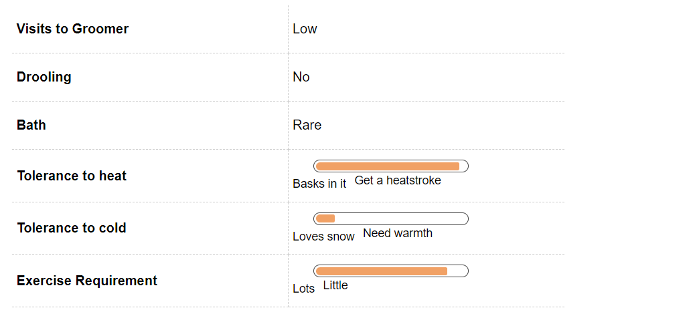
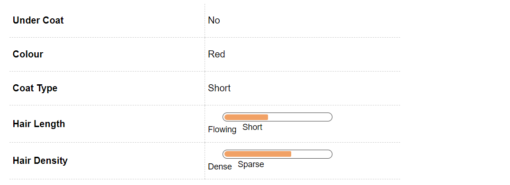
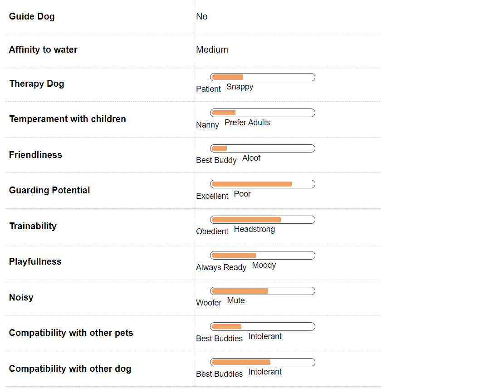
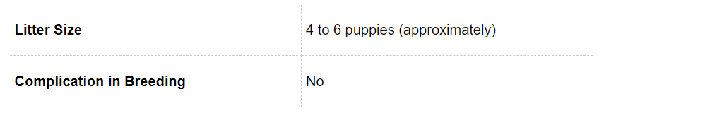
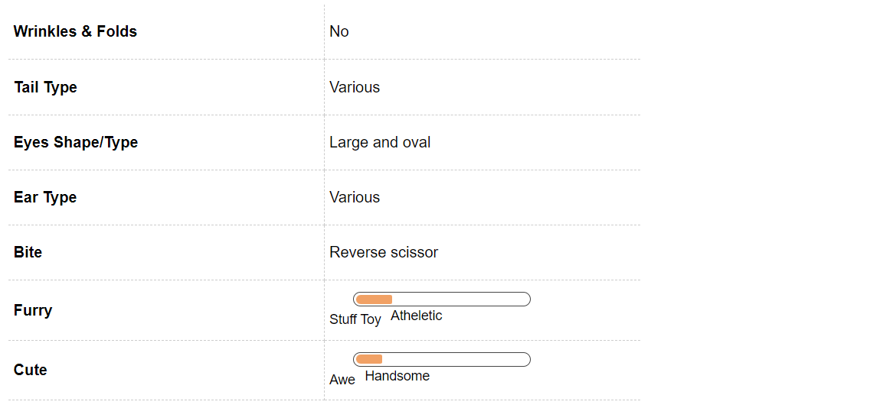

Kombai Dog Breed Information
Introduction
Born and bred in Tamil Nadu, India, the Kombai is a sight hound par excellence. They make lovable pets and are also known to guard their home and family with their lives. The stocky, muscular Kombai is rumoured to be strong enough to kill a bear.
Their lineage and upbringing in the diverse subcontinent ensures that they have very few breed-related health issues, so they’re capable of living and living well in most kinds of weather.
History
The Kombai’s existence can be traced back to the 15th century and historically, they are known to have been bred to hunt wild boar, deer, and bison. Some breed enthusiasts and natives of South India believe that the breed existed even as far back as the 9th century. Kombais were used by the armies of the Marudhu brothers or Marudhu Pandias, who headed the revolt against the British subjugation of the Kalaiar Koil of the Sivakasi Kingdom at the beginning of the 19th century.
Kombais continue to be popular in South India and are celebrated as not just strong hunters but loyal family pets.
Unique Aspects
Fun Trivia

This majestic Indian breed does not have many contenders when it comes to featuring in movies or with celebrity. As soon as we find out of any we will update the section. Stay Tuned for that in this space
Vital Stats:
Dog Breed Group:
Hound Dogs
Height:
17-25 Inches
Weight:
14-24 Kg
Life Span:
13 to 14 years
Pros and Cons
| Pros |
Cons |
|
Grooming is a breeze |
Has a streak of over-protectiveness and stubbornness that can be misconstrued as aggression |
|
Excellent guard dog for the family |
Not good with young children
|
|
Adapts well to all kinds of weather |
|
Kombai Maintenance & Effort

Grooming
Although the Kombai’s coat is short and coarse, it is known to shed. However, a good brushing once or twice a week is enough to take care of the Kombai’s shedding. Like all dogs, they love a good massage, so turn the grooming session into an indulgent spa session, with the use of gentle strokes with a soft brush or hound mitt!
Kombai Hair & Coat

Kombai Health & Care
Common Health Issues
Kombais are generally healthy dogs, but, like all breeds, they may be prone to certain generic as well as genetic conditions. Hip Dysplasia is a common condition amongst Kombais, where the thigh bone does not fit in snugly at the hip joint. Dogs will express pain or exhibit lameness in one or both hind legs, if they are suffering from hip dysplasia. This condition can be managed with medication if mild, and surgery if extreme.
Kombais are also prone to skin problems, with mange and dermatitis being the most common. The hot and moist climate in which they are bred is perhaps the chief reason for this. This climate is a hotbed for various bacteria and insects. Most skin ailments can be prevented with regular grooming and cured with medication. Kombais are also sensitive to anaesthesia, the breed’s low body fat percentage being the main reason for this. Ensure that you consult with a good vet and specifically check this problem out, especially if and when your Kombai needs surgery.
Kombai Behavior

Temperament
Kombais are known for their bravery and their loyalty, a combination that makes them capable of fighting an adversary till death, if they feel the need to protect their family. While they can come across as ferocious dogs, a well brought up Kombai knows how to refrain from misdirected anger.
Kombais do well with children and are gentle with them provided they are socialised together from a young age. The breed is also known not to take kindly to strangers, so early socialisation with many people, animals, sights, sounds, textures, and scents will help a Kombai be a well-rounded adult dog. Your Kombai might do well with other dogs but will not be tolerant towards smaller pets because of their high prey instinct. Kombais have an abundance of energy and will need regular exercise to ensure agility and to give their minds the required stimulation. They do well in an apartment as well, provided you give them their daily dose of exercise.
Environment
Kombais can adapt to any kind of living environment, whether an apartment or a house. If they’re going to be living in an apartment, keep in mind that they are very active energetic dogs, and will need enough outdoor exercise in the form of regular walks and runs. The preferred living condition for a Kombai is a house with a securely fenced yard.
Training & Intelligence
The Kombai needs heavy exercise every day and will channelize their energy elsewhere if proper training and exercise is not provided. The Kombai will need consistent training, in the hands of a firm yet patient and gentle person. They have an inherently nervous temperament and, like most dogs, will not do well when treated harshly. Early socialisation with young children and other animals is recommended. Introduce your Kombai to several smells, sights, and sounds as well, as early as you can, so that they are not nervous later in life.
Kombai Breeding

Procreation
Kombais are generally healthy, robust dogs with few problems during breeding. Their anaesthesia sensitivity will have to be kept in mind, especially if the mother requires a C-section. The average Kombai will attain sexual maturity between six and nine months of age, but they are still too young to be mated. If you must mate your Kombai, wait till he or she is at least two years old. Finally, as in the case of any breed, ensure that you have found responsible families to take the puppies even before you get them mated, so that they don’t fall into the wrong hands. If you’re breeding your dog for the first time, ensure that you’re consulting with a vet regularly and have adequate help during the birthing process. The average litter size is 6-8 puppies.
Puppies
When you bring home this little bundle of joy, remember that the Kombai is a super active dog. Be ready to run around this little puppy all day. You cannot leave them alone for long, as they can inadvertently get quite destructive. They love company and can at times easily develop separation anxiety. Early socialisation and house-training are both important for a well-rounded adult Kombai, so start them young on their training.
Kombai Appearance

Body
The Kombai is a medium size dog with a heavy structure. This hardy breed is a noted hunter of deer, wild boar, and bison as it is well equipped with an athletic muscular body, powerful jaws, and strong legs.
The Kombai has a moderate sized head that is proportionate to the rather short but well developed compact body. It has a slightly long tapering muzzle, a black mouth and pendant ears. The long and muscular neck sits on muscular shoulders.
The Kombai is a short coat breed. This breed normally has a rich red or brown coloured coat and a black mask. The tail is long and carried curved like a sickle. The ridge fur, which is black in colour, runs down the length of the back and continues up to the end of the tail. It is this black ridge that distinguishes this breed from other dogs native to the Indian subcontinent.